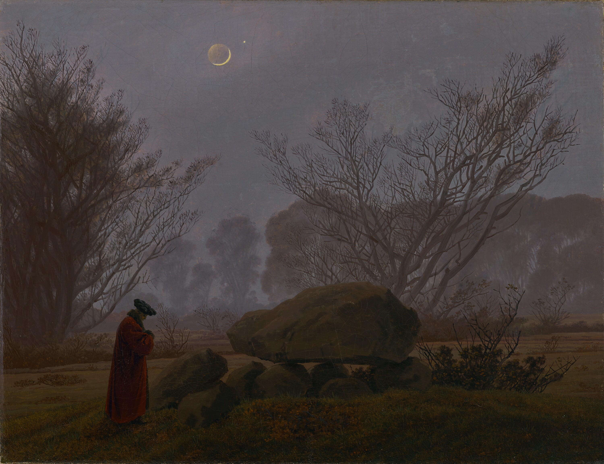

Department of Philosophy
University of St Andrews
Edgecliffe, 5 The Scores
St Andrews, KY16 9AL, UK
md352[at]st-andrews[dot]ac[dot]uk
Hello! I am an MLitt student in philosophy at the University of St Andrews. I am primarily interested in moral, legal, and political philosophy. My current studies focus on distributive justice, just war theory, and the methodology of political philosophy, but I am also interested in neighboring fields like liberty and disobedience, human rights, and general jurisprudence.
I received my B.A. in Mathematics and Philosophy from the University of Wisconsin-Madison.
